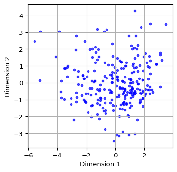
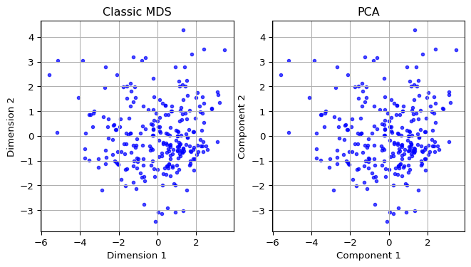
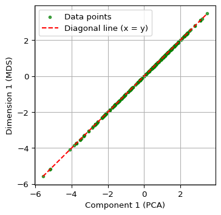
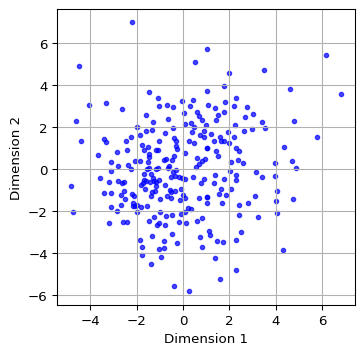
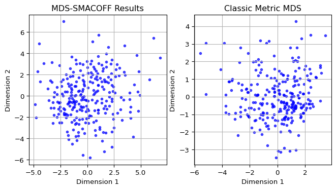
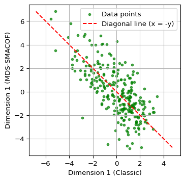
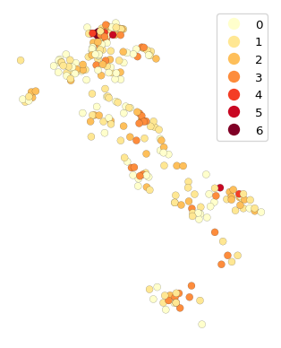
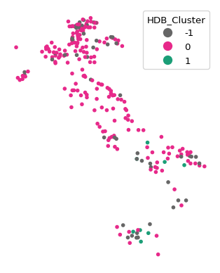
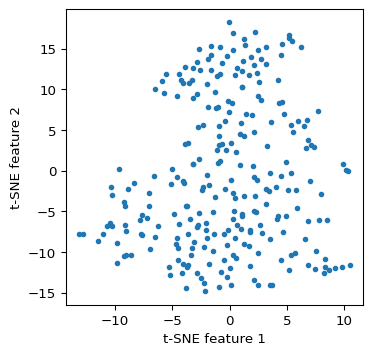

import geopandas as gpd
import pandas as pd
import numpy as np
import matplotlib.pyplot as plt
from sklearn.preprocessing import StandardScaler
from sklearn.metrics import pairwise_distances
from sklearn.manifold import MDS, TSNE
from sklearn.decomposition import PCA
from sklearn.cluster import HDBSCAN
from libpysal.weights import KNN, w_intersection
from spatial_cluster_helper import ensure_datasets, cluster_stats, \
stress_value, distcorr, common_coverage
import pygeoda 6 Distance Preserving Methods
In this Chapter, we consider a second class of dimension reduction techniques, based on the preservation of relative distances in high-dimensional attribute space. We cover two different approaches: multi-dimensional scaling (MDS) and stochastic neighbor embedding (SNE). Whereas MDS uses the actual multi-attribute distance between pairs of observations, SNE is based on information-theoretic concepts of the similarity between probability distributions as the criterion for embedding. The two sets of techniques are covered in Chapters 3 and 4 of the GeoDa Cluster Book.
We continue with the italy_banks sample data for the empirical illustration.
In addition to the usual numpy, pandas, geopandas and matplotlib.pyplot, we also import several specialized packages from scikit-learn. Specifically, to carry out variable standardization we import StandardScaler from sklearn.preprocessing, and to compute the distance matrix we need pairwise_distances from sklearn.metrics. The specific methods are MDS and TSNE from sklearn.manifold, and, as used before, PCA from sklearn.decomposition and HDBSCAN from sklearn.cluster. To characterize the results, we use several helper functions from spatial-cluster-helper, namely ensure_datasets, cluster_stats, stress_value, distcorr and common_coverage. We implement some of the spatialization of these methods employing KNN and w_intersection from libpysal.weights as well as the local spatial autocorrelation functionality from pygeoda.
Required Packages
numpy, pandas, geopandas, matplotlib.pyplot, sklearn.decomposition, sklearn.preprocessing, sklearn.manifold, sklearn.metrics, sklearn.cluster, spatial-cluster-helper, libpysal, pygeoda
Required Data Sets
italy_banks
6.1 Preliminaries
6.1.1 Import Required Modules
6.1.2 Load Data
We follow the usual practice of setting a path (if needed), and read the data from the Italian banks shape file (italy_banks.shp). We also carry out a quick check.
# Setting data folder:
#path = "/your/path/to/data/"
path = "./datasets/"
# Select the Italy community banks point data:
shpfile = "italy_banks/italy_banks.shp"
# Load the data:
ensure_datasets(shpfile, folder_path = path)
dfs = gpd.read_file(path + shpfile)
print(dfs.shape)
print(dfs.head(3))(261, 102)
idd BankName City latitud \
0 1.0 Banca di Andria di Credito Cooperativo SocietÃ... ANDRIA 41.226694
1 8.0 Banca di Credito Cooperativo di Napoli-BCC di ... NAPLES 40.841020
2 9.0 Banca Adria Credito Cooperativo del Delta s.c.... ADRIA 45.052882
longitud COORD_X XKM COORD_Y YKM ID ... \
0 16.302685 1.112303e+06 1112.303366 4.589794e+06 4589.793823 1.0 ...
1 14.250822 9.427720e+05 942.771983 4.534476e+06 4534.475758 8.0 ...
2 12.056720 7.407057e+05 740.705695 4.993464e+06 4993.464408 9.0 ...
EXPE_16 EXPE_17 SERV_11 SERV_12 SERV_13 SERV_14 SERV_15 \
0 0.027966 0.025114 0.793877 0.775691 0.745046 0.630469 0.611941
1 0.023624 0.018840 0.770019 0.562623 0.540712 0.522125 0.601549
2 0.013770 0.012745 0.790542 0.626628 0.515733 0.358735 0.483700
SERV_16 SERV_17 geometry
0 0.640208 0.666425 POINT (1112303.366 4589793.823)
1 0.502599 0.625220 POINT (942771.983 4534475.758)
2 0.567946 0.608880 POINT (740705.695 4993464.408)
[3 rows x 102 columns]6.1.3 Variables
We continue to use the same selection of bank performance indicators for 2013 as in Chapter 5. For completeness sake we list them here as well:
| Column Name | Description |
|---|---|
| CAPRAT | Ratio of capital over risk weighted assets |
| Z | Z score of return on assets (ROA) + leverage over the standard deviation of ROA |
| LIQASS | Ratio of liquid assets over total assets |
| NPL | Ratio of non-performing loans over total loans |
| LLP | Ratio of loan loss provision over customer loans |
| INTR | Ratio of interest expense over total funds |
| DEPO | Ratio of total deposits over total assets |
| EQLN | Ratio of total equity over customer loans |
| EXPE | Ratio of operating expenses over total assets |
| SERV | Net interest income over operating revenues |
We specify varlist as a list with the respective variables names.
varlist = ['CAPRAT13', 'Z_13', 'LIQASS_13', 'NPL_13', 'LLP_13',
'INTR_13', 'DEPO_13', 'EQLN_13', 'EXPE_13', 'SERV_13']We also create a subset of the original GeoDataFrame with just the selected variables, as data_mds.
data_mds = dfs[varlist]6.2 Classic MDS
Classic MDS is based on the Gramm matrix \(XX'\) when the full data set is available (as is the case here). Alternatively, it can also be computed directly from a double-centered squared distance matrix, which is useful when that is the only information available (i.e., no full set of observations \(X\)):
\(XX' = - (1/2)(I - M)D^2(I - M),\)
where \(D\) is the matrix of pairwise distances, and \(M\) is a matrix consisting of elements \(1 / n\). The result of the \((I - M)\) operation is to compute values as deviations from the mean. Pre- and post-multiplying the squared distance matrix with \((I - M)\) is referred to as double centering.
6.2.1 Gramm Matrix
We start by comparing the Gramm matrix and the double centered squared distance matrix. As before, we first standardize the variables using StandardScaler, to which we apply fit_transform with the original data data_mds as argument. In the example below, the matrix \((I - M)\) is used as \(H\).
# Pre-processing: standardize the data
X = StandardScaler().fit_transform(data_mds)
# Compute pairwise distances
dist_matrix = pairwise_distances(X)
# Double-center the distance matrix
n_samples = dist_matrix.shape[0]
# Matrix I - M
H = np.eye(n_samples) - np.ones((n_samples, n_samples)) / n_samples
B = -0.5 * H @ (dist_matrix ** 2) @ H
# Compare to XX
XXp = X @ X.T
print("B:\n", B[0:5,0:5])
print("XXp:\n", XXp[0:5,0:5])B:
[[ 2.07700836e+01 1.19850381e+01 -3.04437191e-01 -4.46754435e+00
-6.75815062e+00]
[ 1.19850381e+01 1.71772980e+01 4.22260221e+00 -1.76067198e-02
-1.91990000e+00]
[-3.04437191e-01 4.22260221e+00 7.49594112e+00 4.04560929e+00
4.20339927e+00]
[-4.46754435e+00 -1.76067198e-02 4.04560929e+00 7.39569901e+00
5.11760413e+00]
[-6.75815062e+00 -1.91990000e+00 4.20339927e+00 5.11760413e+00
6.73823232e+00]]
XXp:
[[ 2.07700836e+01 1.19850381e+01 -3.04437191e-01 -4.46754435e+00
-6.75815062e+00]
[ 1.19850381e+01 1.71772980e+01 4.22260221e+00 -1.76067198e-02
-1.91990000e+00]
[-3.04437191e-01 4.22260221e+00 7.49594112e+00 4.04560929e+00
4.20339927e+00]
[-4.46754435e+00 -1.76067198e-02 4.04560929e+00 7.39569901e+00
5.11760413e+00]
[-6.75815062e+00 -1.91990000e+00 4.20339927e+00 5.11760413e+00
6.73823232e+00]]Clearly, it doesn’t matter whether we use the Gramm matrix or the double centered squared distance matrix. In our example, since we have the full matrix \(X\), we will use the Gramm matrix to compute the eigenvalues and eigenvectors.
6.2.2 Eigendecomposition
In classic MDS, the coordinates of the observations in two dimensions are obtained from the eigenvalues and eigenvectors of the Gramm Matrix. To compute these, we use the eigh function from numpy.linalg because we know that \(XX'\) is real and symmetric. Note that the eigenvalues are not necessarily in any given order, so that we need to apply argsort to get them in decreasing order (the ordering given by argsort is always in increasing order, hence the additional argument [::-1]).
# Eigendecomposition
eigvals, eigvecs = np.linalg.eigh(XXp)
sorted_indices = np.argsort(eigvals)[::-1]
eigvals = eigvals[sorted_indices]
eigvecs = eigvecs[:, sorted_indices]
print("Leading eigenvalues:", np.round(eigvals[0:2],4))Leading eigenvalues: [779.5404 460.1891]6.2.3 MDS Dimensions
We obtain the first two dimensions as \(VG^{1/2}\), i.e., we multiply the first two eigenvectors with the square root of the matching eigenvalue. We add the result to a data frame (mds_classic_df) for easy plotting.
# Compute the embedding
k = 2 # Number of dimensions
top_eigvals = eigvals[:k]
top_eigvecs = eigvecs[:, :k]
embedding = top_eigvecs * np.sqrt(top_eigvals)
mds_classic_df = pd.DataFrame(embedding, columns=['Dimension 1', 'Dimension 2'])
print(mds_classic_df.head(10)) Dimension 1 Dimension 2
0 -2.266790 0.434138
1 -1.179120 1.977893
2 1.519542 0.677415
3 2.319006 0.928530
4 2.369562 -0.240218
5 -2.548597 -0.089174
6 3.475160 3.461779
7 0.214755 -0.683837
8 0.273706 1.325170
9 1.427797 0.9228416.2.4 Characteristics of the MDS Solution
6.2.4.1 Stress function
A measure of how well the higher-dimension distances have been reflected in the embedding is given by the stress function, the squared difference between the pairwise distances in higher dimension and in the embedded space.
To compute the stress value, we need the pairwise_distance for the embedded coordinates. We then compute the sum of squares of the differences between the two distances (raw stress), and normalize this by dividing by the sum of squares of the original distance matrix. This is implemented in the stress_value function imported from the spatial_cluster_helper module. This function only requires two arguments, the original pairwise distance matrix, here dist_matrix, and the \(n\) by 2 matrix of embedded coordinates, here embedding. The return is a tuple consisting of the raw stress measure (not standardized) and the normalized stress.
r1, nr1 = stress_value(dist_matrix, embedding)
print("Raw Stress:", np.round(r1, 4))
print("Normalized Stress:", np.round(nr1, 4))Raw Stress: 105792.7325
Normalized Stress: 0.3941The normalized stress value computed here is identical to the measure shown in Figure 3.3. of the GeoDa Spatial Cluster book.
6.2.4.2 Rank correlation
Another common measure to indicate the quality of the MDS embedding is the rank correlation between the original and embedded distance matrices. The small function distcorr from the spatial_cluster_helper module computes the Spearman rank correlation using the spearmanr function from scipy.stats. To avoid duplication in the computation (since the distance matrix is symmetric and has a zero diagonal), the function first extracts the upper diagonal elements from each distance matrix and turns them into a numpy array. It again takes the original pairwise distance matrix, dist_matrix and the embedded coordinate array, embedding, as arguments.
In our example, the rank correlation is 0.804. This is again identical to the result shown in Figure 3.3 of the GeoDa Spatial Cluster book.
print("Rank correlation: ", np.round(distcorr(dist_matrix,embedding), 3))Rank correlation: 0.8046.2.5 Visualizing MDS Results
We illustrate the locations of the observations in the two-dimensional MDS space by means of a simple scatter plot applied to the dimension coordinates contained in the mds_classic_df data frame just created. We add labels for the x and y axes. A final customization is to set the color as blue, the transparency alpha = 0.7 and the size of the points as s=10.
plt.figure(figsize = (4, 4))
plt.scatter(mds_classic_df['Dimension 1'], mds_classic_df['Dimension 2'],
color = 'blue', alpha = 0.7, s=10)
plt.xlabel("Dimension 1")
plt.ylabel("Dimension 2")
plt.grid(True)
plt.show()

6.3 Classic MDS and PCA
6.3.1 Comparing Two Dimensions
Since the Classic MDS solution is based on the eigenvalues and eigenvectors of \(XX'\), the dimensions provide the same information as the first two principal components. We illustrate this by showing the associated scatter plots side by side.
We first compute the principal components using the PCA class from sklearn.decomposition with fit_transform, as illustrated in Chapter 5. We add the first two components (the first two columns of pca_res) to a data frame pca_df for plotting. We then apply the same routines as in Section 6.2.5 for the scatterplot of MDS dimensions (using mds_classic_df) and the principal components (using pca_df) and ensure the figures are side by side by means of subplots.
The resulting plots are identical.
#Compare with PCA
pca_res = PCA(n_components = 2).fit_transform(X)
pca_df = pd.DataFrame(pca_res[:, :2], columns = ['Component 1', 'Component 2'])
fig, axes = plt.subplots(1, 2, figsize = (8, 4)) # Create a figure with 1 row and 2 columns
# Plot MDS results
axes[0].scatter(mds_classic_df['Dimension 1'], mds_classic_df['Dimension 2'],
color = 'blue', alpha = 0.7, s=10)
axes[0].set_title("Classic MDS")
axes[0].set_xlabel("Dimension 1")
axes[0].set_ylabel("Dimension 2")
axes[0].grid(True)
# Plot PCA results
axes[1].scatter(pca_df['Component 1'], pca_df['Component 2'],
color = 'blue', alpha = 0.7, s=10)
axes[1].set_title("PCA")
axes[1].set_xlabel("Component 1")
axes[1].set_ylabel("Component 2")
axes[1].grid(True)
plt.show()

6.3.2 Comparing the First Dimension
Finally, we show a scatter plot of the first principal component against the first MDS dimension. We extract these from their respective data frames, i.e, the just created pca_df and mds_classic_df. We carry out some utility manipulations with the minima and maxima to create a nice graph. The result shows a perfect linear relationship between the two concepts.
# Combine MDS and PCA results into one DataFrame
comparison_df = pd.DataFrame({
'Component 1': pca_df['Component 1'],
'Dimension 1': mds_classic_df['Dimension 1']
})
x = comparison_df['Component 1']
y = comparison_df['Dimension 1']
# Get the range for the axes
x_min, x_max = x.min(), x.max()
y_min, y_max = y.min(), y.max()
# Determine the limits for the diagonal line (x = y)
min_val = min(x_min, y_max) # Smallest value considering the inverted y
max_val = max(x_max, y_min) # Largest value considering the inverted y
# Create the plot
plt.figure(figsize = (4, 4))
plt.scatter(comparison_df['Component 1'], comparison_df['Dimension 1'],
color = 'green', alpha = 0.7, label = 'Data points', s=10)
plt.plot([min_val, max_val], [min_val, max_val], color = 'red',
linestyle = '--', label = 'Diagonal line (x = y)')
plt.xlabel("Component 1 (PCA)")
plt.ylabel("Dimension 1 (MDS)")
plt.grid(True)
plt.legend()
plt.show()

6.4 MDS Analysis With Scikit-Learn
6.4.1 SMACOF
The MDS class in sklearn.manifold does not support the classic MDS solution, but instead implements the SMACOF method due to de Leeuw (1977) and de Leeuw and Mair (2009) (SMACOF stands for “scaling by majorizing a complex function”). Technical details are provided in Section 3.3 of the GeoDa Cluster Book.
The implementation works as all others in scikit-learn: first an object of the proper class is created, and then a method of the class (typically fit or fit_transform) is applied to find a solution.
There are two basic ways to accomplish this with an object of the MDS class. One is to apply the fit_transform method, to which the standardized \(X\) matrix is passed. This yields a \(n \times 2\) numpy array with the embedded coordinates. A second, more comprehensive approach is to apply the generic fit method. This yields an object that contains several characteristics of the solution as attributes, such as the coordinates in embedding_ (don’t forget the underscore), the stress value in stress_ and the number of iterations in n_iter_. One attribute is dissimilarity_matrix_, the distance matrix for the original data - note that this is NOT the distance matrix for the MDS solution. For metric distance, the stress value is not normalized. We can use the stress_value function from the spatial_cluster_helper module to compute the normalized measure.
The stress is the only measure of fit provided by the MDS class. To compute a rank correlation, we again use our distcorr function.
The MDS call takes as arguments the number of desired components, n_components - default 2 -, the type of distance, metric = True by default, a random number seed to ensure reproducibility, random_state, as well as some other arguments. In most cases the default settings are fine and only the random_state should be set to get the same results each time (the initialization is random, so that different results can be obtained depending on the starting values). Full details are given at https://scikit-learn.org/stable/modules/generated/sklearn.manifold.MDS.html.
We first create an MDS object as mds_est and then apply fit_transform to obtain a \(n \times 2\) array of embedded coordinates as mds_res. We next turn that array into a data frame (mds_df) for later plotting. The only argument needed is random_state. We set it to 123456789, the same as the GeoDa default. For all the other arguments, the default values are fine (e.g., n_components = 2).
We can safely ignore the warning.
# Perform MDS using scikit-learn
mds_est = MDS(random_state = 123456789)
mds_res = mds_est.fit_transform(X)
mds_df = pd.DataFrame(mds_res, columns = ['Dimension 1', 'Dimension 2'])
print(mds_df.head(10))/Users/luc/anaconda3/envs/py313/lib/python3.13/site-packages/sklearn/manifold/_mds.py:677: FutureWarning: The default value of `n_init` will change from 4 to 1 in 1.9.
warnings.warn( Dimension 1 Dimension 2
0 4.366106 1.063019
1 4.060755 -1.026445
2 -0.177011 -2.509416
3 -1.042375 -2.565401
4 -2.059762 -1.746349
5 1.046476 5.701215
6 -0.391955 -5.548806
7 -0.814223 0.428391
8 2.420641 -2.200385
9 -1.233516 -2.275464By using the fit_transform method, several attributes were added to the original mds_est object. This is in addition to returning an array with coordinates. For example, the same coordinates are contained in mds_est.embedding_.
mds_est.embedding_[0:10, :]array([[ 4.36610569, 1.06301919],
[ 4.06075516, -1.02644466],
[-0.17701083, -2.50941605],
[-1.0423754 , -2.56540099],
[-2.05976176, -1.74634883],
[ 1.0464762 , 5.70121531],
[-0.39195529, -5.54880556],
[-0.81422257, 0.42839149],
[ 2.42064085, -2.20038499],
[-1.2335157 , -2.27546384]])If the method fit were used, the output would be an MDS object with the attributes attached, but not a numpy array. Otherwise, there is no distinction between the two approaches.
6.4.2 Visualizing MDS (SMACOF)
As in the case of classic MDS, we can use the columns in the new data frame (mds_df) to create a scatter plot of the coordinates, by means of the same commands as in Section 6.2.5.
plt.figure(figsize = (4, 4))
plt.scatter(mds_df['Dimension 1'], mds_df['Dimension 2'],
color = 'blue', alpha = 0.7, s=10)
plt.xlabel('Dimension 1')
plt.ylabel('Dimension 2')
plt.grid(True)
plt.show()

6.4.3 Measures of Fit
The MDS object contains a stress measure in the stress_ attribute. However, for metric scaling, this result is not normalized. Also, there is no rank correlation. As mentioned, we can use the stress_value and dist_corr functions from the spatial-cluster-helper module to obtain those properties.
print(np.round(mds_est.stress_, 0))40675.0r2, nr2 = stress_value(dist_matrix, mds_res)
print("Raw Stress:", np.round(r2, 0))
print("Normalized Stress:", np.round(nr2, 4))Raw Stress: 40675.0
Normalized Stress: 0.2444print("Rank correlation: ", np.round(distcorr(dist_matrix, mds_res), 4))Rank correlation: 0.86866.5 SMACOF vs classic MDS
6.5.1 Comparing Two Dimensions
To compare the layout obtained by SMACOF MDS to the one from classic MDS, we take the relevant columns from the mds_df (for SMACOF) and mds_classic_df (for classic MDS) dataframes and apply the same matplotlib commands as in Section 6.3.1 to set the plots side by side.
The scatter plots reveal quite a bit of discrepancies.
fig, axes = plt.subplots(1, 2, figsize = (8, 4))
# Plot MDS SMACOFF results
axes[0].scatter(mds_df['Dimension 1'], mds_df['Dimension 2'],
color = 'blue', alpha = 0.7, s=10)
axes[0].set_title('MDS-SMACOFF Results')
axes[0].set_xlabel('Dimension 1')
axes[0].set_ylabel('Dimension 2')
axes[0].grid(True)
# Plot Classic MDS results
axes[1].scatter(mds_classic_df['Dimension 1'],
mds_classic_df['Dimension 2'],
color = 'blue', alpha = 0.7, s=10)
axes[1].set_title('Classic Metric MDS')
axes[1].set_xlabel('Dimension 1')
axes[1].set_ylabel('Dimension 2')
axes[1].grid(True)
plt.show()

6.5.2 Comparing the First Dimension
A closer comparison follows from a scatter plot of the first dimensions against each other, as in Section 6.3.2. The relevant columns are from mds_df and mds_classic_df.
The graph clearly illustrates how the two methods result in different lower-dimensional embeddings.
# Combine MDS classic and SMACOF results into one DataFrame
comparison_df = pd.DataFrame({
'Dimension 1C': mds_classic_df['Dimension 1'],
'Dimension 1S': mds_df['Dimension 1']
})
x = comparison_df['Dimension 1C']
y = comparison_df['Dimension 1S']
# Get the range for the axes
x_min, x_max = x.min(), x.max()
y_min, y_max = y.min(), y.max()
# Determine the limits for the diagonal line (x = -y)
min_val = min(x_min, -y_max) # Smallest value considering the inverted y
max_val = max(x_max, -y_min) # Largest value considering the inverted y
# Create the plot
plt.figure(figsize = (4, 4))
plt.scatter(comparison_df['Dimension 1C'], comparison_df['Dimension 1S'],
color = 'green', alpha = 0.7, label = 'Data points',s = 10)
plt.plot([min_val, max_val], [-min_val, -max_val], color = 'red',
linestyle = '--', label = 'Diagonal line (x = -y)')
plt.xlabel('Dimension 1 (Classic)')
plt.ylabel('Dimension 1 (MDS-SMACOF)')
plt.grid(True)
plt.legend()
plt.show()

6.6 Spatializing MDS
A distinctive characteristics of the presentation of dimension reduction methods in the GeoDa Cluster Book is the introduction of different ways to spatialize the results of an MDS. This exploits the coordinates of the points in the embedded space as a shortcut for points in higher-dimensional space. In other words, clustering on the MDS points becomes a proxy for multi-dimensional clustering.
This is particularly relevant for multivariate spatial clustering, which we have seen is a challenge. Instead of tackling this as a multivariate problem, it is approached as an application of the analysis of point clusters in two dimensions.
We consider two specific applications: a neighbor match test and HDBScan, both computed with the MDS coordinates as variables.
6.6.1 Neighbor Match Test
One straightforward application is the computation of a neighbor match test on the MDS coordinates. In our current example, this can then be compared to the results of a neighbor match test in 10-dimensional space. As mentioned, it becomes computationally quite challenging to obtain k-nearest neighbors in higher-dimensional spaces, so this provides an easy proxy.
We compute the neighbor match test by means of pygeoda.neighbor_match_test, as covered in Chapter 3. We first create a new data frame as a concatenation of the original point data with the coordinates from classic MDS, contained in mds_classic_df. We set k = 12 and plot the resulting neighbor cardinality. These results can then be compared to a neighbor match test applied to the original 10 variables (not shown here).
#Neighbor Match Test
dfs_mds = pd.concat([dfs.reset_index(drop = True),
mds_classic_df.reset_index(drop = True)], axis = 1)
dfs_mds_g = pygeoda.open(dfs_mds)
nmt = pygeoda.neighbor_match_test(dfs_mds_g,
dfs_mds_g[['Dimension 1', 'Dimension 2']], 12)
dfs_mds['Cardinality'] = nmt['Cardinality']fig, ax = plt.subplots(figsize = (5, 5))
dfs_mds.plot(column = 'Cardinality',
ax = ax,
legend = True,
categorical = True,
cmap = 'YlOrRd',
edgecolor = 'black',
linewidth = 0.1)
ax.set_axis_off()

We observe that there are several locations (banks) with considerable overlap between the neighbors in attribute space and the geographical neighbors. These represent multivariate spatial clusters.
6.6.2 HDBScan
Another alternative to a full multidimensional clustering exercise is to carry out density-based clustering on the MDS coordinate points. In other words, close points in MDS space represent close points in the higher-dimensional attribute space. Clusters in the MDS points detected by a method such as HDBScan thus become a proxy for full multivariate clustering.
We illustrate this with the HDBSCAN approach from scikit learn, covered in Chapter 4. We set min_cluster_size to 7 and extract the dimensions from the dfs_mds data frame. We then map the cluster points in the usual way.
We also use the cluster_stats function imported from the spatial_cluster_helper module to provide a succint summary of the cluster results. As before, we pass the labels_ array to this function.
#HDBSCAN
hdb_results = HDBSCAN(min_cluster_size = 7).fit(dfs_mds[['Dimension 1',
'Dimension 2']])
hdb_labels = [str(label) for label in hdb_results.labels_]
n_clusters_ = len(set(hdb_labels)) - (1 if '-1' in hdb_labels else 0)
n_noise_ = hdb_labels.count('-1')
print("Estimated number of clusters: %d" % n_clusters_)
print("Estimated number of noise points: %d" % n_noise_)
dfs_mds['hdb_cluster'] = hdb_labelsEstimated number of clusters: 2
Estimated number of noise points: 54fig, ax = plt.subplots(figsize = (5, 5))
dfs_mds.plot(column = 'hdb_cluster', ax = ax, cmap = 'Dark2_r',
legend = True, markersize = 10,
legend_kwds = {'loc': 'upper right', 'title': 'HDB_Cluster'})
ax.set_axis_off()
plt.show()

c_stats = cluster_stats(hdb_results.labels_) Labels Cardinality
-1 54
0 199
1 86.6.3 Common Coverage Percentage
The GeoDa Cluster Book introduces the common coverage percentage as a measure to quantify the extent of local overlap between MDS solutions. This is based on a comparison of k-nearest neighbor spatial weights constructed from the respective coordinates. A special case is to compare the MDS solution to geographical spatial weights, similar in spirit to the principle behind the nearest neighbor match test.
A number of different applications are possible. First, one can assess the intersection between two spatial weights and the extent to which this matches the overall coverage. For example, if the weights are k-nearest neighbor with k = 6, then the number of non-zero elements in the weights matrix is \(n_{max} = n \times k\). We can use the w_intersection method from libpysal.weights to find the number of common non-zero elements between the two spatial weights as the nonzero attribute of the intersection, say \(n_{nonzero}\). Then the ratio of \(n_{nonzero} / n_{max}\) or \(n_{nonzero} / n^2\) gives a scale-free measure of the common coverage between the two weights. This is a quantitative measure of the commonality of nearest neighbors between the two sets of coordinates, which is easier to interpret than a visual assessment of the two scatter plots.
We first illustrate the measures for the classic MDS solution relative to the geographical k-nearest neighbors and then extend this to comparing the classic and SMACOF solutions. We start by going through the different steps in detail to illustrate the logic. Afterwards, we will be using the common_coverage function from the spatial_cluster_helper module.
The first step is to create spatial weights objects from the geographical coordinates, using libpysal.weights.KNN.from_dataframe, and from the embedded coordinates, using libpysal.weights.KNN.from_array (the coordinates are passed as a \(n \times 2\) numpy array). We show the number of nonzero cells as an attribute of the weight object.
# knn spatial weights for geographical coordinates
w_pts = KNN.from_dataframe(dfs, k = 6)
print("Nonzero weights - geographical coordinates:", w_pts.nonzero)
w_mds_classic = KNN.from_array(embedding, k = 6)
w_mds_classic.nonzero
print("Nonzero weights - MDS:", w_mds_classic.nonzero)Nonzero weights - geographical coordinates: 1566
Nonzero weights - MDS: 1566Of course, the number of non-zero weights is nothing but \(n \times k\), or 261 x 6. The density of these weights can be compared to a complete coverage (ignoring the diagonals, taking \(n^2\) for simplicity) as the ratio nonzero/\(n^2\).
In this example, this yields about 2.3%.
n = embedding.shape[0]
print(np.round((100.0 * w_pts.nonzero) / n**2,4))2.2989The intersection between the two weights is obtained with the w_intersection method from libpysal.weights. We can then take the ratio of the non-zero elements to the complete coverage or to the maximum obtained for the specific value of k.
w_mds_knn = w_intersection(w_mds_classic, w_pts, silence_warnings = True)
nn_mds = w_mds_knn.nonzero
print("Nonzero elements in intersection:", nn_mds)
print("Absolute common coverage (percent):", np.round(100.0*nn_mds/n**2,4))
print("Relative common coverage (percent):",
np.round(100.0*nn_mds/w_pts.nonzero,4))Nonzero elements in intersection: 97
Absolute common coverage (percent): 0.1424
Relative common coverage (percent): 6.1941If not silenced as in this example, the intersection operation yields some warnings for unconnected observations, which can be safely ignored in this context. The results show 97 overlapping non-zero weights, which yield an absolute common coverage percent (relative to the complete connection) of 0.14% and a relative common coverage percent of 6.19%.
The common coverage percentage between the point pattern and classic MDS can also be computed by means of the common_coverage function. The two arguments are the point GeoDataFrame (dfs), the n by 2 array with the embedded coordinates (embedding), and the number of nearest neighbors (k = 6). The result is a tuple, containing the number of overlapping neighbors, the common coverage percentage relative to the size of the weights and the common coverage percentage relative to the total number of neighbors.
comm_pt_classic = common_coverage(dfs, embedding, k = 6, silence_warnings = True)
print(np.round(comm_pt_classic,4))[97. 0.1424 6.1941]We similarly compute the common coverage percentage between classic MDS and MDS SMACOF. In this case, the first argument is the array with classic MDS coordinates, embedding, and the second argument is the array obtained from MDS, mds_res. The number of nearest neighbors is the default (k = 6) and therefore not specified. The result is again a tuple.
comm_class_smac = common_coverage(embedding, mds_res, silence_warnings = True)
print(np.round(comm_class_smac,4))[587. 0.8617 37.484 ]Relative to the match between the geographic coordinates and MDS, the two MDS solutions show 37.5% overlap in their non-zero intersections.
6.7 Stochastic Neighbor Embedding (SNE)
A drawback of the MDS approach is that it employs squared distances in the objective function, and thus emphasizes the impact of points that are far apart. As a consequence, MDS tends to do less well to keep the low-dimensional representation of close data points in high dimension also close together in the embedded space. A different approach is offered by stochastic neighbor embedding (SNE) developed by Hinton and Roweis (2003) and van der Maaten and Hinton (2008). Instead of basing the alignment between high and low-dimensional representations on a stress function that includes the actual distances, the problem is reformulated as one of matching two different probability distributions. These distributions replace the explicit distance measure by a probability that any point \(j\) is a neighbor of a given point \(i\), with this probability as an inverse function of distance.
The essence of SNE then boils down to matching the probability distribution in high dimensional space to a distribution in low-dimensional embedded space, similar to how distances were matched in MDS. This is based on information-theoretic concepts, such as the Kullback-Leibler Information Criterion (KLIC) measure of fit. Technical details are given in Chapter 4 of the GeoDa Cluster Book.
6.7.1 Implementation
Stochastic Neighbor Embedding (SNE or t-SNE) is implemented as TSNE in sklearn.manifold. The overall interface is very similar to that of MDS, even though the algorithm is totally different. In addition, the results of TSNE are very sensitive to various parameter settings, so that just using the defaults is typically not satisfactory. This is also illustrated with the examples using GeoDa in Chapter 4 of the GeoDa Cluster Book.
Important arguments in the creation of an object of class SNE are:
n_components: the dimension of the embedding, default = 2perplexity: a measure of the number of nearest neighbors considered, related to the entropy of the distribution, default = 30.0learning_rate: multiplier used in the optimization routine, default = ‘auto’max_iter: the number of iterations, default = 1000metric: distance metric, default = ‘euclidean’random_state: random seed to ensure replication, default = None
Of these, the perplexity turns out to be a critical parameter. It should be adjusted in a sensitivity analysis. Also, as mentioned before, it is good practice to set random_state to a fixed value so that the results can be reproduced.
Important attributes of a TSNE object are:
embedding_: the resulting coordinate vectorskl_divergence_: the Kullback-Leibler divergence between the original distribution and the final point distributionlearning_rate_: the effective learning raten_iter_: the number of iterations used
As in the case of MDS, we can use either fit or fit_transform to compute a solution.
Further details can be found at https://scikit-learn.org/stable/modules/generated/sklearn.manifold.TSNE.html.
We implement TSNE using fit_transform with the matrix X as argument. We use the familiar matplotlib commands to plot the resulting coordinate scatter plot. The only argument is random_state, which we again set to the same value as in GeoDa. Nevertheless, there are several small differences between the implementation of the highly nonlinear algorithm so that it becomes near impossible to replicate the results exactly. Also, the type of animation possible with GeoDa cannot be achieved in a static Python environment.
#stochastic neighbor embedding
tsne = TSNE(random_state = 123456789)
tsne_res = tsne.fit_transform(X)plt.figure(figsize = (4, 4))
plt.scatter(tsne_res[:, 0], tsne_res[:, 1],s=10)
plt.xlabel('t-SNE feature 1')
plt.ylabel('t-SNE feature 2')
plt.show()

Some characteristics of the solution.
print("Kullback-Leibler divergence:", np.round(tsne.kl_divergence_,4))
print("Number of iterations:", tsne.n_iter_)
print("Learning rate:", tsne.learning_rate_)Kullback-Leibler divergence: 0.7582
Number of iterations: 999
Learning rate: 50.0It cannot be emphasized enough that considerable experimentation is needed to assess the sensitivity of the results to the various tuning parameters. This is beyond our current scope.
6.7.2 Solution characteristics
The t-SNE object created by scikit-learn only contains the Kullback_Leibler divergence as a measure of fit. Alternatives, such as the rank correlation coefficient, can be computed by means of the distcorr function defined above. The two arguments are the original pairwise distance matrix, dist_matrix and the coordinates of the embedded points, contained in tsne_res.
print("Rank correlation:", np.round(distcorr(dist_matrix, tsne_res), 4))Rank correlation: 0.62756.7.3 Spatializing t-SNE
We can apply the same visualization and spatial analysis of the t-SNE coordinates as illustrated above for MDS. This includes a nearest neighbor match test, HDBScan on the t-SNE coordinates, and an assessment of the common coverage percentage. This is not further pursued here.
6.8 Practice
Given the sensitivity of the results to various starting values for the parameters, considerable experimentation is in order. For example, different random seeds can be considered, and the important parameters of t-SNE adjusted. The results can be compared in terms of their fit with the helper functions stress_value or distcorr, and their degree of overlap assessed visually as well as by means of common_coverage.